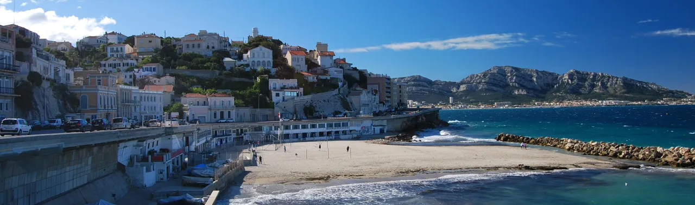
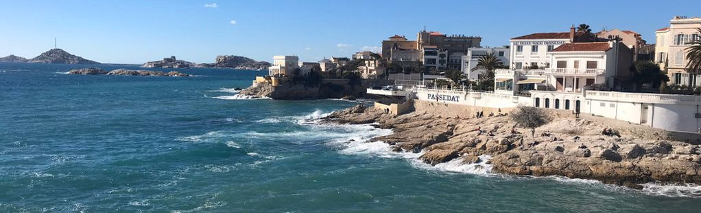
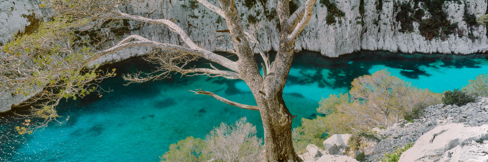

Marseille possède 21 plages sur son littoral, naturelles et artificielles, de sable ou de galets, des quartiers Sud jusqu'au Nords. Les plages du Prado qui sont des plus populaires pour leur emplacement très axé touristique (quartiers sud) sont un aménagement artificiel du littoral créé à la fin des années 1970 par Gaston Defferre à Marseille. Les plages ont été construites sur 20 hectares pris sur la mer, à l'aide des remblais issus de la construction des deux lignes de métro marseillaises. Mais les plages naturelles elles ne sont pas en réserve, avec des eaux magnifiques et moins polluées que les plages du Prado car en général plus difficile d'accès et donc moins fréquentées.
La ville de Marseille via diffèrents aménagements et prestations de rendre ses plages des plus propres car elles restent l'un des plus gros atouts touristiques de la ville. Des analyses d'eau sont effectués très fréquemments, voir quotidiennement en été pour contrôler la qualité des eaux. Si des agents pathogènes sont détéctés dans de grandes quantités alors l'accès a la baignade peut être temporairement limité comme plusieurs fois sur la plage du Prophète cet été (2023) ou l'accès a l'eau était restreint par des installations.
 La sécurité sur les plages de Marseille sont assurés dans 15 zones surveillées et 9 sont non surveillées. La Ville de Marseille offre également
chaque année, gratuitement des services de consignes où les usagers peuvent laisser en toute sécurité leurs effets personnels.
Les plages concernées sont les suivantes : Corbière - Catalans - Prophète - Prado Nord - Prado Sud - Huveaune - Borély-Bonneveine - Pointe-Rouge.
La réglementation en générale est très stricte et surveillée dans les zones concernées, l’objectif est à
la fois de permettre aux vacanciers de profiter d’un lieu de détente plus sain, mais également de limiter la pollution
due aux milliers de mégots abandonnés sur les plages chaque année.
Les plages de Prado Sud et de Prado Nord sont les premières plages littorales labelisées "Tourisme et handicap" en
France, dès 2005. Elles sont entièrement accessibles aux personnes en fauteuils roulants et aux personnes aveugles
ou malvoyantes et aux personnes handicapées mentales ou psychiques. Huit "tiralos" (véhicules amphibies) sont mis
à la disposition des personnes plus lourdement handicapées afin de rejoindre l’eau et de profiter de la baignade.
